代码
library(ggplot2)
dat <- data.frame(cond = rep(c("A", "B"), each=10),
xvar = 1:20 + rnorm(20,sd=3),
yvar = 1:20 + rnorm(20,sd=3))
ggplot(dat, aes(x=xvar, y=yvar)) +
geom_point(shape=1) +
geom_smooth() 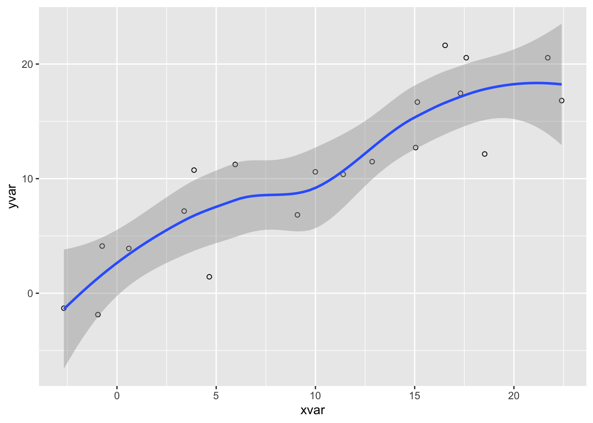
There are wide variety of options available to customize the display of source code within HTML documents, including:
Details on using all of these options are provided below.
For many documents you may want to hide all of the executable source code used to produce dynamic outputs. You can do this by specifying echo: false in the document execute options. For example:
Note that we can override this option on a per code-block basis. For example:
Code block options are included in a special comment at the top of the block (lines at the top prefaced with #| are considered options).
Use the code-fold option to include code but have it hidden by default using the HTML <details> tag. For example, click the Code button to see the code that produced this plot.
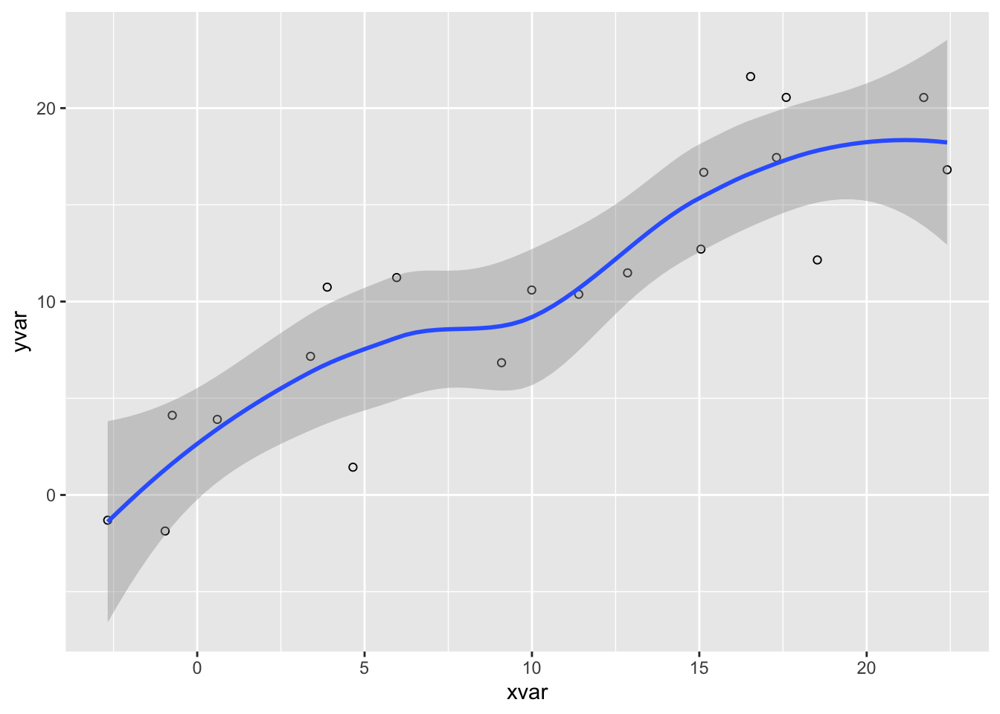
Here we specify both code-fold: true as well as custom summary text (the default is just “Code” as shown above):
Valid values for code-fold include:
| Value | Behavior |
|---|---|
false |
No folding (default) |
true |
Fold code (initially hidden) |
show |
Fold code (initially shown) |
Use the code-fold and code-summary chunk attributes to control this on a chunk-by-chunk basis:
In some cases the width of source code will overflow the available horizontal display space. By default, this will result in a horizontal scroll bar for the code block. However if you prefer not to have scrollbars you can have the longer lines wrap instead.
To set the global default behavior use the code-overflow option. For example:
Valid values for code-overflow are:
| Option | Description |
|---|---|
scroll |
Scroll code blocks that exceed available width (default, corresponds to white-space: pre). |
wrap |
Wrap lines of code that exceed available width (corresponds to white-space: pre-wrap). |
You can also override the global default on a per-code-block basis. For computational cells you do this with the code-overflow cell option:
For a static code block, add the .code-overflow-scroll or .code-overflow-wrap CSS class:
Note that irrespective of these options, code will always wrap within printed HTML output (as it would otherwise be clipped off the edge of the page).
You can include a Code menu in the header of your document that provides various tools for readers to interact with the source code. Specify code-tools: true to activate these tools:
If you have a document that includes folded code blocks then the Code menu will present options to show and hide the folded code as well as view the full source code of the document:
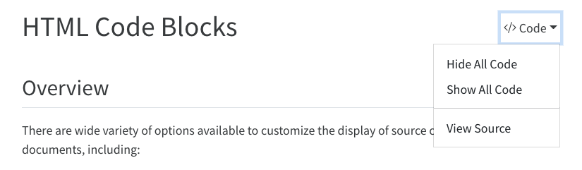
This document specifies code-tools: true in its options so you should see the Code menu above next to the main header.
You can control which of these options are made available as well as the “Code” caption text using sub-options of code-tools. For example, here we specify that we want only “View Source” (no toggling of code visibility) and no caption on the code menu:
By default, the source code is embedded in the document and shown in a popup window like this:
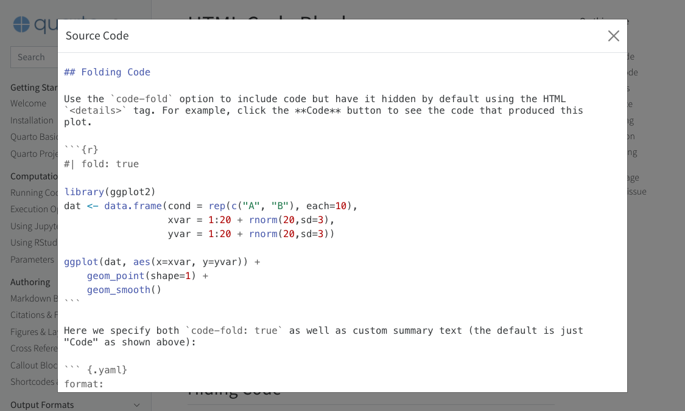
You can alternatively specify a URL for the value of source:
If you are within a project and have specified a repo-url option then you can just use repo and the correct link to your source file will be generated:
Note that the code-tools option is not available when you disable the standard HTML theme (e.g. if you specify the theme: none option).
By default code blocks are rendered with a left border whose color is derived from the current theme. You can customize code chunk appearance with some simple options that control the background color and left border. Options can either be booleans to enable or disable the treatment or can be legal CSS color strings (or they could even be SASS variable names!).
Here is the default appearance for code blocks (code-block-background: true):
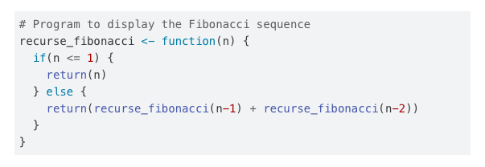
You can instead use a left border treatment using the code-block-border-left option:
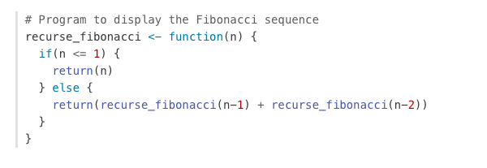
You can combine a background and border treatment as well as customize the left border color:
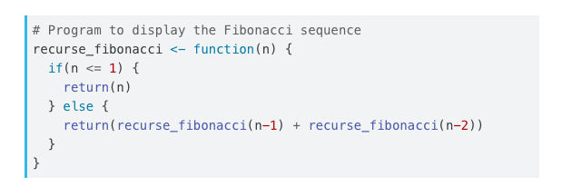
Use the filename attribute on code blocks If you are documenting the contents of a file and want to be especially clear about the name of the file the code is associated with.
For example, the following code:
```{.python filename="matplotlib.py"}
import matplotlib.pyplot as plt
plt.plot([1,23,2,4])
plt.show()
```Results in this HTML output:
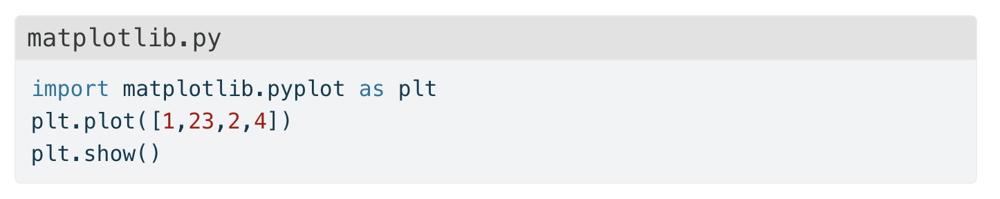
Non-HTML formats will still have the filename, but it will simply be shown in bold above the code block.
Pandoc will automatically highlight syntax in fenced code blocks that are marked with a language name. For example:
```python
1 + 1
```Pandoc can provide syntax highlighting for over 140 different languages (see the output of quarto pandoc --list-highlight-languages for a list of all of them). If you want to provide the appearance of a highlighted code block for a language not supported, just use default as the language name.
You can specify the code highlighting style using highlight-style and specifying one of the supported themes. These themes are “adaptive”, which means they will automatically switch between a dark and light mode based upon the theme of the website. These are designed to work well with sites that include a dark and light mode.
All of the standard Pandoc themes are also available:
As well as an additional set of extended themes, including:
The highlight-style option determines which theme is used. For example:
Highlighting themes can provide either a single highlighting definition or two definitions, one optimized for a light colored background and another optimized for a dark color background. When available, Quarto will automatically select the appropriate style based upon the code chunk background color’s darkness. Users may always opt to specify the full name (e.g. atom-one-dark) to by pass this automatic behavior.
By default, code is highlighted using the arrow theme, which is optimized for accessibility. We’ve additionally introduced the arrow-dark theme which is designed to provide accessible highlighting against dark backgrounds.
Examples of the light and dark themes:
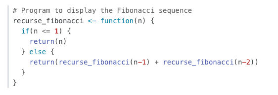
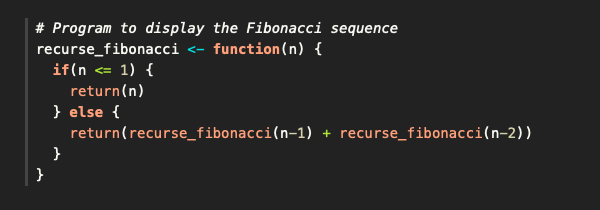
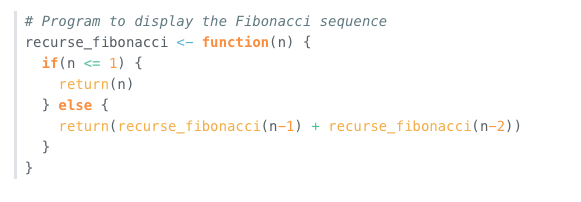
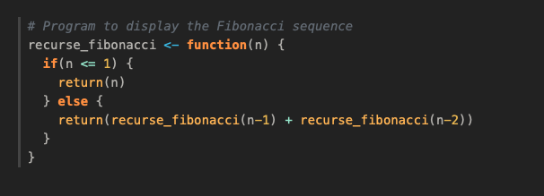
In addition to the built in themes available for syntax highlighting, you can also specify your own syntax highlighting by providing the path to a valid theme file (which is based upon the KDE XML syntax highlighting descriptions). Highlighting is implemented using skylighting.
For example:
In addition, if you’d like to provide adaptive themes, you may also pass both a light and dark theme file:
Note that as with adaptive text higlighting themes, when you provide a dark and light highlight-style, background colors specified in the themes will be ignored in favor of the overall theme specified background colors.
You can add annotations to lines of code in code blocks and executable code cells. See Code Annotation for full details.
If you want to display line numbers alongside the code block, add the code-line-numbers option. For example:
Here’s how a code block with line numbers would display:
You can also enable line numbers for an individual code block using the code-line-numbers attribute. For example:
The documentation on computations covers how to include executable code blocks (code which is actually executed, with its output being included in the rendered document). We won’t additionally cover that here, but we will talk about how to include code blocks that demonstrate executable syntax (e.g. for writing a tutorial).
Often you’ll want to include a fenced code block purely as documentation (not executable). You can do this by using two curly braces around the language (e.g. python, r, etc.) rather than one. For example:
Will be output into the document as:
If you want to show an example with multiple code blocks and other markdown, just enclose the entire example in 4 backticks (e.g. ````) and use the two curly brace syntax for code blocks within. For example:
Hover over the code block below and you will see a copy icon in the top-right corner:
This behavior is enabled by default but you configure it using the code-copy option:
Valid values for code-copy include:
hover |
Show button on hover (default) |
true |
Always show code copy button |
false |
Never show code copy button |
The code-link option enables hyper-linking of functions within code blocks to their online documentation:
Code linking is currently implemented only for the knitr engine (via the downlit package). A limitation of downlit currently prevents code linking if code-line-numbers and/or code-annotations are also true.
---
title: "HTML Code Blocks"
format:
html:
code-tools: true
execute:
warning: false
---
## Overview
There are wide variety of options available to customize the display of source code within HTML documents, including:
1. Hiding some or all code that was executed by [Knitr](https://yihui.name/knitr) or [Jupyter](https://jupyter.org).
2. Code folding for executed code (hidden by default and expandable by readers).
3. Handling code that overflows the available horizontal display space.
4. View the source code of the markdown file used to generate the document.
5. Syntax highlighting themes and other options to control the appearance of code.
6. Copy to clipboard button for code blocks.
7. Generating hyperlinks to online documentation for functions used within code blocks via the [downlit](https://downlit.r-lib.org/) package (note that this option currently only works when using the Knitr engine).
Details on using all of these options are provided below.
## Hiding Code
For many documents you may want to hide all of the executable source code used to produce dynamic outputs. You can do this by specifying `echo: false` in the document `execute` options. For example:
``` yaml
---
title: "My Document"
execute:
echo: false
jupyter: python3
---
```
Note that we can override this option on a per code-block basis. For example:
```{python}
#| echo: true
import matplotlib.pyplot as plt
plt.plot([1,2,3,4])
plt.show()
```
Code block options are included in a special comment at the top of the block (lines at the top prefaced with `#|` are considered options).
## Folding Code
Use the `code-fold` option to include code but have it hidden by default using the HTML `<details>` tag. For example, click the **Code** button to see the code that produced this plot.
```{r}
#| code-fold: true
library(ggplot2)
dat <- data.frame(cond = rep(c("A", "B"), each=10),
xvar = 1:20 + rnorm(20,sd=3),
yvar = 1:20 + rnorm(20,sd=3))
ggplot(dat, aes(x=xvar, y=yvar)) +
geom_point(shape=1) +
geom_smooth()
```
Here we specify both `code-fold: true` as well as custom summary text (the default is just "Code" as shown above):
``` yaml
format:
html:
code-fold: true
code-summary: "Show the code"
```
Valid values for `code-fold` include:
| Value | Behavior |
|---------|------------------------------|
| `false` | No folding (default) |
| `true` | Fold code (initially hidden) |
| `show` | Fold code (initially shown) |
Use the `code-fold` and `code-summary` chunk attributes to control this on a chunk-by-chunk basis:
```{r}
#| code-fold: true
#| code-summary: "Show the code"
```
## Code Overflow
In some cases the width of source code will overflow the available horizontal display space. By default, this will result in a horizontal scroll bar for the code block. However if you prefer not to have scrollbars you can have the longer lines wrap instead.
To set the global default behavior use the `code-overflow` option. For example:
``` yaml
format:
html:
code-overflow: wrap
```
Valid values for `code-overflow` are:
| Option | Description |
|------------------|------------------------------------------------------|
| `scroll` | Scroll code blocks that exceed available width (default, corresponds to `white-space: pre`). |
| `wrap` | Wrap lines of code that exceed available width (corresponds to `white-space: pre-wrap`). |
You can also override the global default on a per-code-block basis. For computational cells you do this with the `code-overflow` cell option:
```{python}
#| code-overflow: wrap
# very long line of code....
```
For a static code block, add the `.code-overflow-scroll` or `.code-overflow-wrap` CSS class:
```` python
```{.python .code-overflow-wrap}
# very long line of code....
```
````
Note that irrespective of these options, code will always wrap within printed HTML output (as it would otherwise be clipped off the edge of the page).
## Code Tools
You can include a **Code** menu in the header of your document that provides various tools for readers to interact with the source code. Specify `code-tools: true` to activate these tools:
``` yaml
format:
html:
code-fold: true
code-tools: true
```
If you have a document that includes folded code blocks then the **Code** menu will present options to show and hide the folded code as well as view the full source code of the document:
{.border fig-alt="A screen shot of the header of a rendered Quarto document showing the result of setting both the code-fold and code-tools option to true. There is a drop-down menu labeled 'Code' to the right of the page title with a triangle pointing down. The menu is open and there are three options listed vertically beneath it: 'Hide All Code,' 'Show All Code,' and 'View Source.'"}
This document specifies `code-tools: true` in its options so you should see the **Code** menu above next to the main header.
You can control which of these options are made available as well as the "Code" caption text using sub-options of `code-tools`. For example, here we specify that we want only "View Source" (no toggling of code visibility) and no caption on the code menu:
``` yaml
format:
html:
code-tools:
source: true
toggle: false
caption: none
```
By default, the source code is embedded in the document and shown in a popup window like this:
{fig-alt="A screenshot of this webpage with a pop-up window labeled 'Source Code' over it. This 'Source Code' window contains the raw markdown and R code used to write this page. There is an 'X' on the upper right corner of the 'Source Code' pop up to close it."}
You can alternatively specify a URL for the value of `source`:
``` yaml
format:
html:
code-tools:
source: https://github.com/quarto-dev/quarto-web/blob/main/index.md
```
If you are within a project and have specified a `repo-url` option then you can just use `repo` and the correct link to your source file will be generated:
``` yaml
format:
html:
code-tools:
source: repo
```
Note that the `code-tools` option is not available when you disable the standard HTML theme (e.g. if you specify the `theme: none` option).
## Appearance
By default code blocks are rendered with a left border whose color is derived from the current theme. You can customize code chunk appearance with some simple options that control the background color and left border. Options can either be booleans to enable or disable the treatment or can be legal CSS color strings (or they could even be SASS variable names!).
Here is the default appearance for code blocks (`code-block-background: true`):
{fig-alt="A block of code with a gray background."}
You can instead use a left border treatment using the `code-block-border-left` option:
``` yaml
code-block-border-left: true
```
{fig-alt="A block of code with a gray vertical stripe running along its left border. This code block has no background."}
You can combine a background and border treatment as well as customize the left border color:
``` yaml
code-block-bg: true
code-block-border-left: "#31BAE9"
```
{fig-alt="A block of code with a gray background and a blue vertical stripe running along its left border."}
## Code Filename
Use the `filename` attribute on code blocks If you are documenting the contents of a file and want to be especially clear about the name of the file the code is associated with.
For example, the following code:
```` markdown
```{.python filename="matplotlib.py"}
import matplotlib.pyplot as plt
plt.plot([1,23,2,4])
plt.show()
```
````
Results in this HTML output:

Non-HTML formats will still have the filename, but it will simply be shown in bold above the code block.
## Highlighting
Pandoc will automatically highlight syntax in [fenced code blocks](https://pandoc.org/MANUAL.html#fenced-code-blocks) that are marked with a language name. For example:
```python
1 + 1
```
Pandoc can provide syntax highlighting for over 140 different languages (see the output of `quarto pandoc --list-highlight-languages` for a list of all of them). If you want to provide the appearance of a highlighted code block for a language not supported, just use `default` as the language name.
You can specify the code highlighting style using `highlight-style` and specifying one of the supported themes. These themes are "adaptive", which means they will automatically switch between a dark and light mode based upon the theme of the website. These are designed to work well with sites that include a dark and light mode.
- a11y
- arrow
- atom-one
- ayu
- breeze
- github
- gruvbox
All of the standard Pandoc themes are also available:
- pygments
- tango
- espresso
- zenburn
- kate
- monochrome
- breezedark
- haddock
As well as an additional set of extended themes, including:
- dracula
- monokai
- nord
- oblivion
- printing
- radical
- solarized
- vim-dark
The `highlight-style` option determines which theme is used. For example:
``` yaml
highlight-style: github
```
Highlighting themes can provide either a single highlighting definition or two definitions, one optimized for a light colored background and another optimized for a dark color background. When available, Quarto will automatically select the appropriate style based upon the code chunk background color's darkness. Users may always opt to specify the full name (e.g. `atom-one-dark`) to by pass this automatic behavior.
By default, code is highlighted using the `arrow` theme, which is optimized for accessibility. We've additionally introduced the `arrow-dark` theme which is designed to provide accessible highlighting against dark backgrounds.
Examples of the light and dark themes:
#### Arrow (light)
{fig.alt="A block of code showcasing the Arrow (light) theme."}
#### Arrow (dark)
{fig.alt="A block of code showcasing the Arrow (dark) theme."}
#### Ayu (light)
{fig.alt="A block of code showcasing the Ayu (light) theme."}
#### Ayu (dark)
{.preview-image fig.alt="A block of code showcasing the Ayu (dark) theme."}
### Custom Highlighting
In addition to the built in themes available for syntax highlighting, you can also specify your own syntax highlighting by providing the path to a valid theme file (which is based upon the KDE XML syntax highlighting descriptions). Highlighting is implemented using [skylighting](https://github.com/jgm/skylighting).
For example:
``` yaml
---
highlight-style: custom.theme
---
```
In addition, if you'd like to provide adaptive themes, you may also pass both a light and dark theme file:
``` yaml
---
highlight-style:
light: custom-light.theme
dark: custom-dark.theme
---
```
Note that as with adaptive text higlighting themes, when you provide a dark and light `highlight-style`, background colors specified in the themes will be ignored in favor of the overall theme specified background colors.
{{< include _code-annotation.md >}}
## Line Numbers
If you want to display line numbers alongside the code block, add the `code-line-numbers` option. For example:
``` yaml
format:
html:
code-line-numbers: true
```
Here's how a code block with line numbers would display:
``` {.python code-line-numbers="true"}
import matplotlib.pyplot as plt
plt.plot([1,23,2,4])
plt.show()
```
You can also enable line numbers for an individual code block using the `code-line-numbers` attribute. For example:
```` python
``` {.python code-line-numbers="true"}
import matplotlib.pyplot as plt
plt.plot([1,23,2,4])
plt.show()
```
````
## Executable Blocks
The documentation on [computations](/docs/get-started/computations/) covers how to include executable code blocks (code which is actually executed, with its output being included in the rendered document). We won't additionally cover that here, but we will talk about how to include code blocks that demonstrate executable syntax (e.g. for writing a tutorial).
{{< include ../computations/_unexecuted-blocks.md >}}
## Copy Button
Hover over the code block below and you will see a copy icon in the top-right corner:
```{r eval=FALSE}
library(dygraphs)
dygraph(nhtemp, main = "New Haven Temperatures") %>%
dyRangeSelector(dateWindow = c("1920-01-01", "1960-01-01"))
```
This behavior is enabled by default but you configure it using the `code-copy` option:
``` yaml
format:
html:
code-copy: false
```
Valid values for `code-copy` include:
| | |
|---------|--------------------------------|
| `hover` | Show button on hover (default) |
| `true` | Always show code copy button |
| `false` | Never show code copy button |
## Code Linking
The `code-link` option enables hyper-linking of functions within code blocks to their online documentation:
``` yaml
format:
html:
code-link: true
```
Code linking is currently implemented only for the knitr engine (via the [downlit](https://downlit.r-lib.org) package).
A limitation of downlit currently prevents code linking if `code-line-numbers` and/or `code-annotations` are also `true`.